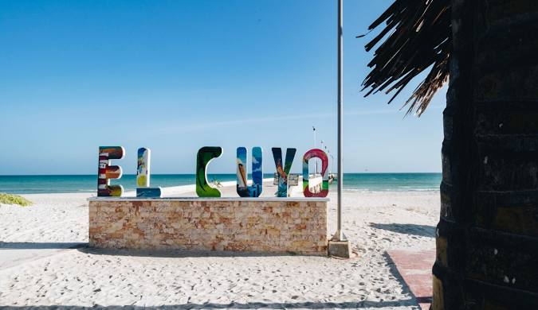
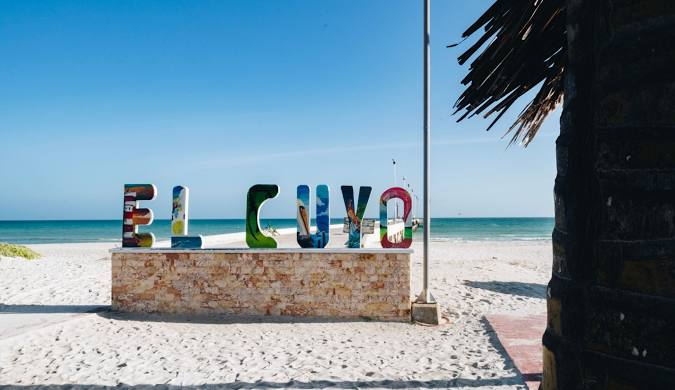
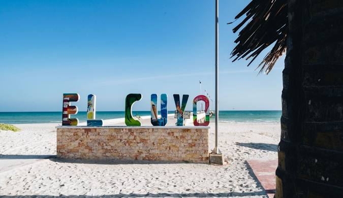

Galería de El Cuyo


 



Las fotos usadas en este proyecto de caracter educacional, fueron tomadas de google imagenes, no son de mi autoria.

Las fotos usadas en este proyecto de caracter educacional, fueron tomadas de google imagenes, no son de mi autoria.